Hi, welcome to my world
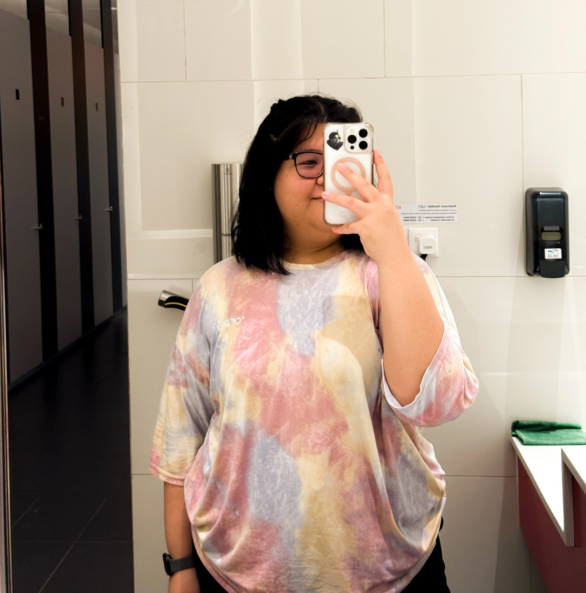
Eldest daughter to PR and SPR. Second child to a set of 5 siblings. I’ve graduated 3 times, my last being a bachelor’s degree. I have a big family; lots of aunties and uncles, cousins, nieces and nephews to keep track of, and blessed that is continously growing. I have a lot of good friends, and two are my ride or die.
Reading
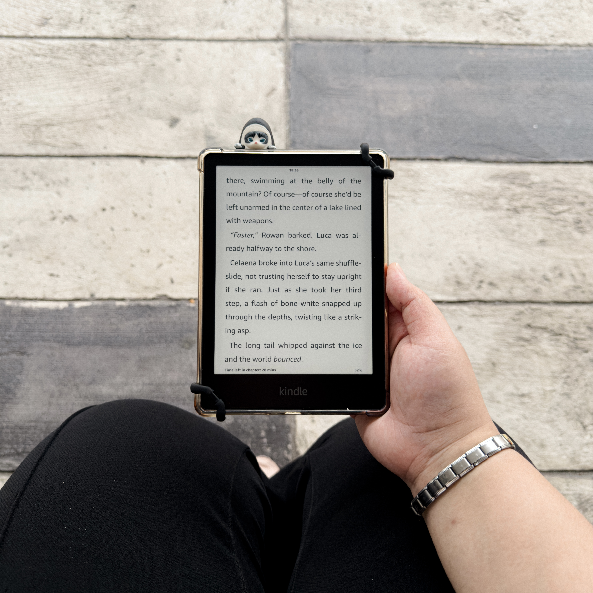
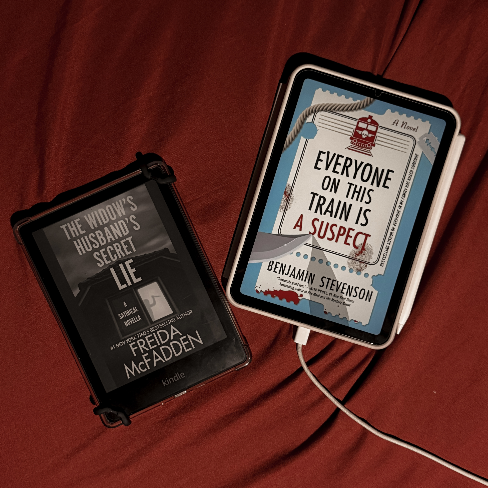
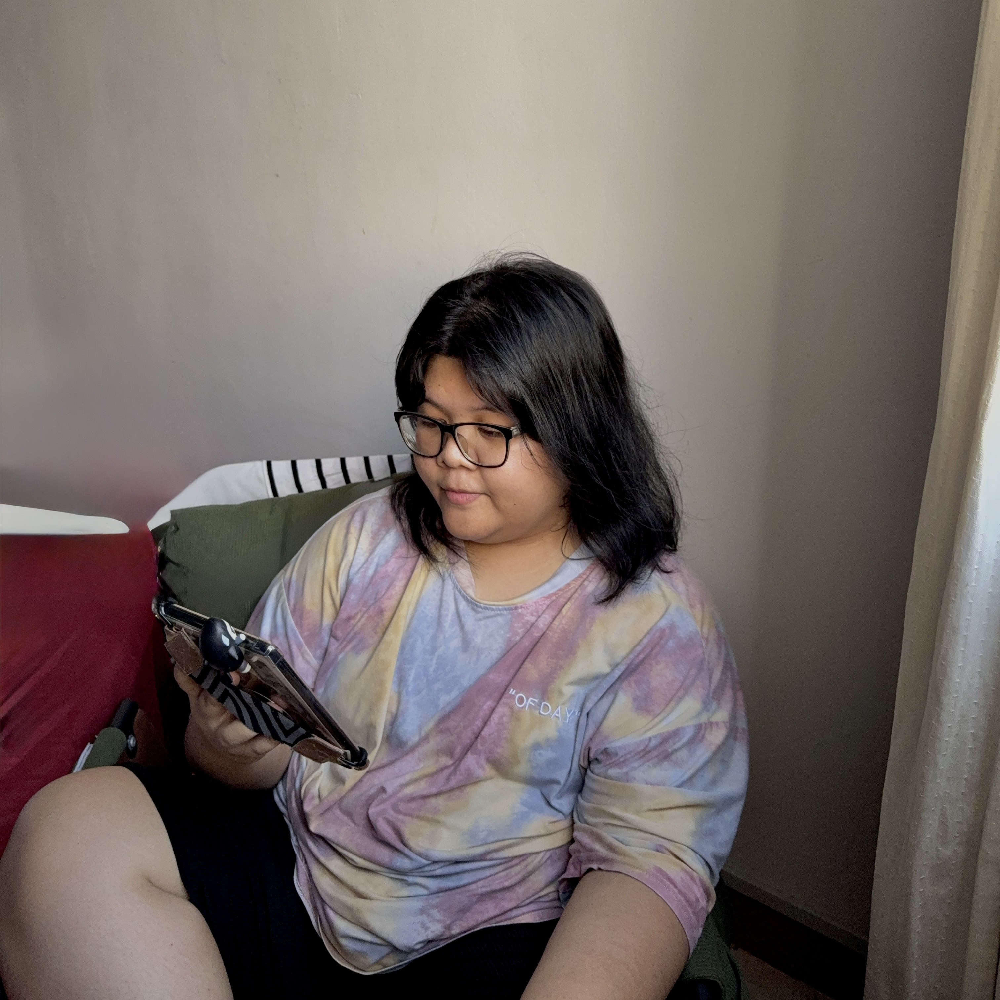
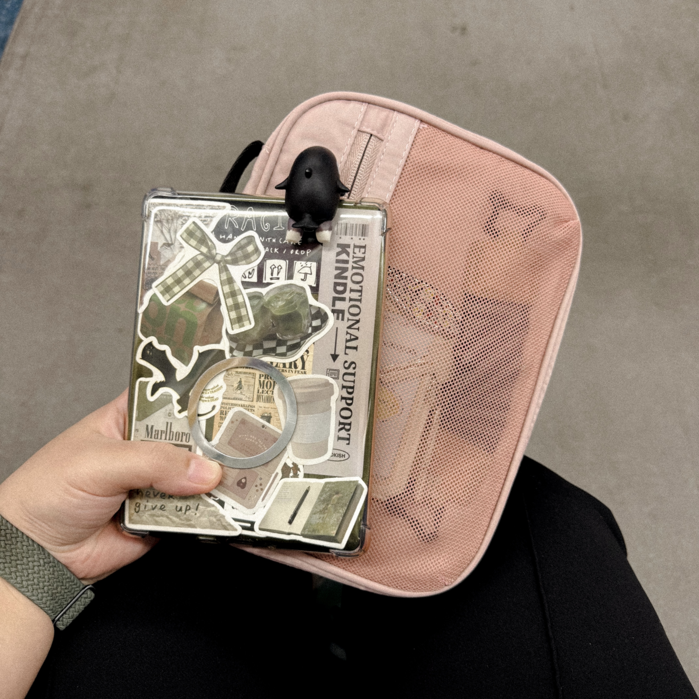
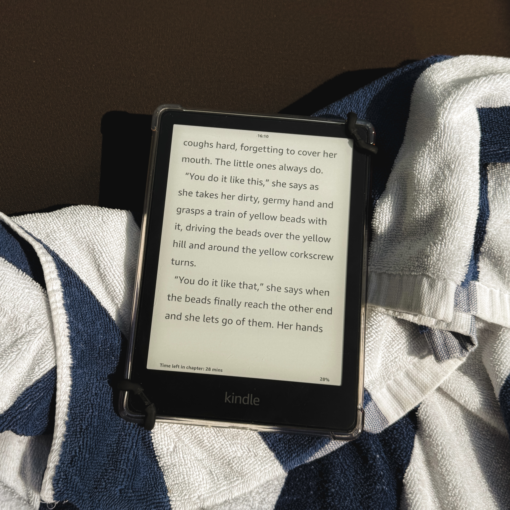
I started getting back into reading when I was in my final year of my degree after so long leaving it behind since high school. And let me tell you, I haven’t stopped since. Reading brings me to a world where my problems are no where to be found. My favourite genre would have to be Thrillers and Mysteries. But I don’t mind some Romances as well, you know, the ones that makes you giggle and kick your feet. If I were to pick a trope, that would have to be Grumpy Sunshine. I don’t know, it’s something about how a big scary man who is intimated by everyone else, but becomes a big ol’ softie to the woman he loves. It just gets me every time. What are you reading at the moment?
Singing
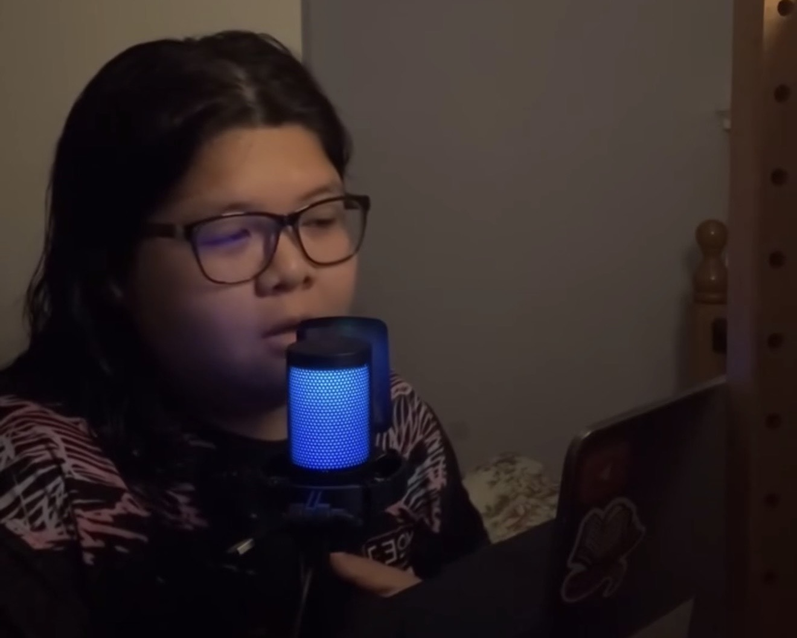
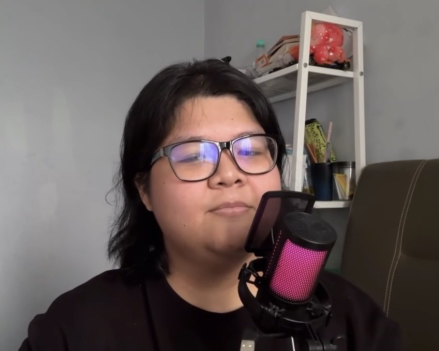
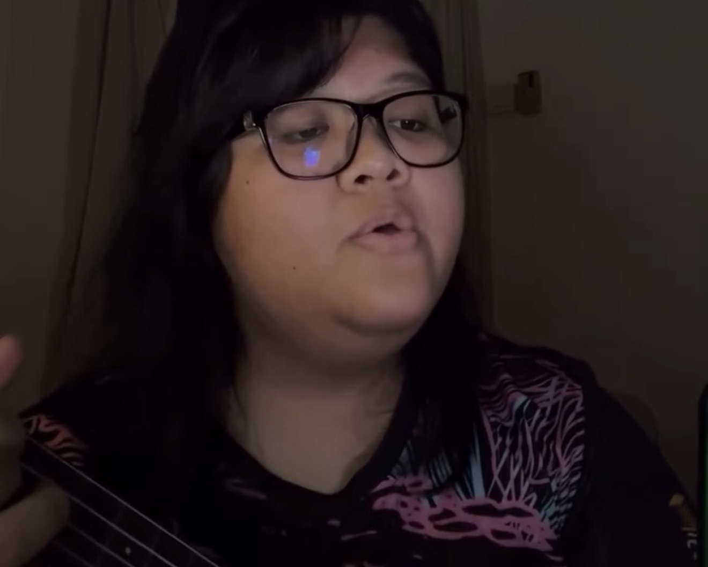
Mostly, I just like music, and when you like music, you just can’t help but to sing along. I do have a few covers recorded. So, check out my socials above there. But anyway, I have a ukulele and sometimes just jam with it, but when I just want to sing, YouTube is my best friend. There’s a lot of karaoke videos in there. But if I want to really scream my lungs out, a karaoke place is the way to go. And going alone is not beneath me. I’d say my most favourite genre is country, but I still enjoy any songs that is good. Here are my playlists, if you want to know what I’m listening to.
Gaming
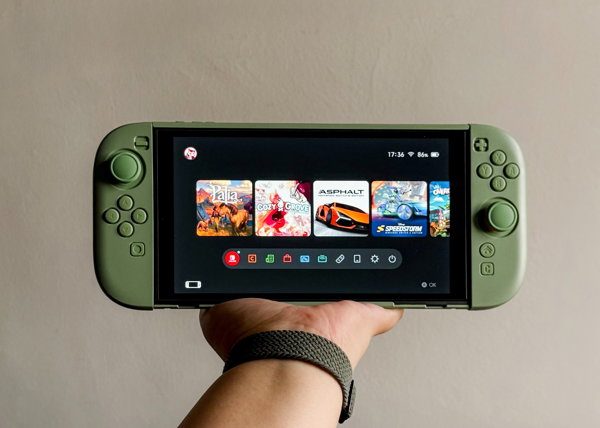
Mobile gaming
- PUBG Mobile
Console gaming
- Stardew Valley
- Palia
- Cozy Grove
I love to just chill and play some cozy games. These games absorbs most of my days because of how chill and relax they are to me. I’d always pick up my console whenever I feel too distracted to read. Now, PUBG Mobile, I’ve been playing since the pandemic. And I don’t think I remember if I’ve ever stopped playing. Current, I mostly play with a good friend, who also happens to be a colleague, and we would hope on to FaceTime and play when we don’t have anything busy (work related) planned the next day. I would say PUGB is a chill and cozy game. We mostly play it to have fun. If we win, we win, if not, then, just continue on with the next game.
I’ve always wanted to stream my games since I was a younger. I might maybe, one day. But anywho, would you be interested in that?
Editing


I like recording things. And sometimes, those videos will ended up being edited and posted. Especially when I’m around my friends and family. I loved recording videos when I was still in high school, but as I got a little older, I kinda stopped that part of me behind. Because I think I started losing my passion for it. But lately, I’m starting to get back into videography and photography again, but mainly editing videos. And I’m currently learning to use Davinci Resolve. And let me tell you, it’s actually a really good editing software once you get used to it. It’s not like those usual softwares where you can just tap and drag as how you want it to be. No, this software requires you actually turn dials, change numbers, and play with XY-axis. But so far, it’s going great. There’s a lot more to learn, I’m just getting the basics. I still have yet to understand about colour grading. That is going to a very long chapter.
Formula 1

I got into Formula 1 in 2023. I was actually reading the Dirty Air Series that was revolve around the Formula 1 world. I didn’t think too much of it when suddenly my TikTok feed was filled with real drivers who would have fit the aesthetics of the characters in the series. And from there onwards, I was introduced into the motorsports world. At first, Charles Leclerc was my favourite driver for a while, because how can you deny, he is good looking. But when I laid my eyes on Lando Norris and mostly, get to know his character, I jumped ship. Lando captured my attention, and not mainly because of his looks, but because of who he is as a person. And you don’t see much of that a lot in that world, especially for a young man like himself. And Oscar Piastri, it just comes naturally because of their dynamics with each other. They support, push and made each other better. You don’t really see much of that in the other teams. I don’t know if it’s Lando himself, but whatever it is, I hope it continues longer. Because I can’t see a world where these two are not teammates.
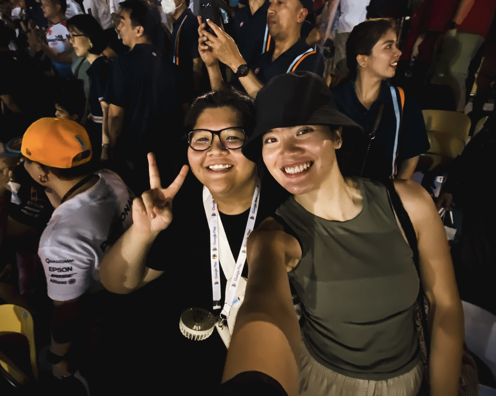
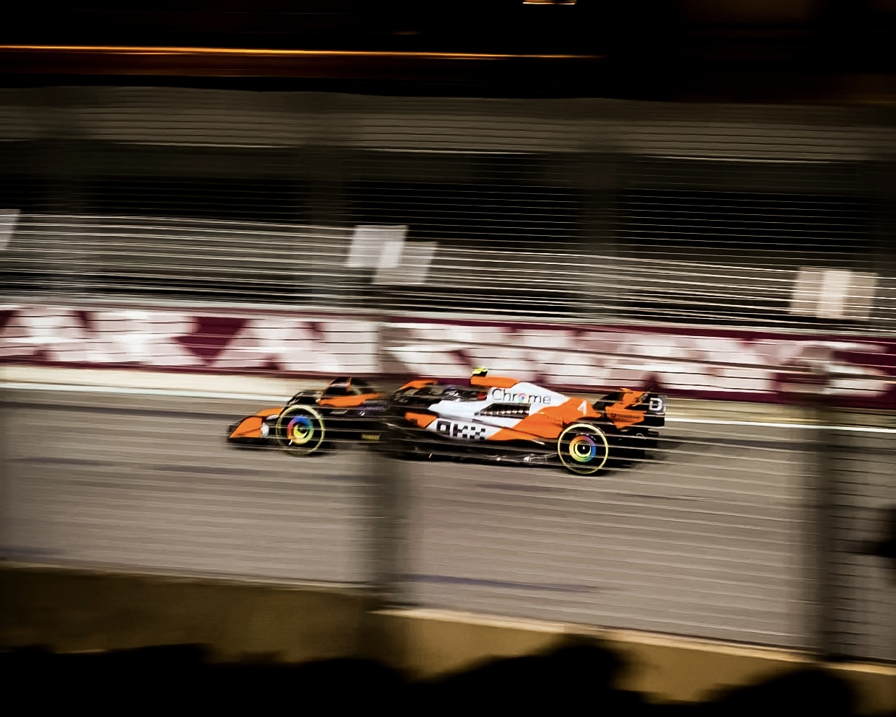
I was lucky enough to attend my first ever Formula 1 race, curtesy to my lovely cousin. And it was an amazing experience. Not to mention that Lando actually won that race! I hope one day, I could return the favour.